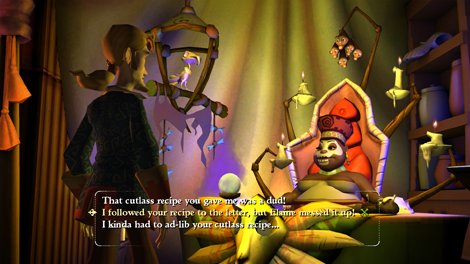

10 |
Parler aux gens |
 |
Au cours de votre aventure, vous rencontrerez d'autres personnages susceptibles de vous aider à résoudre les énigmes et de vous informer de ce qui se produit autour de vous. Assurez-vous de parler avec tous ceux que vous rencontrerez car vous ne savez jamais de quelle manière ils peuvent vous aider. 
Lors de votre interaction avec quelqu'un, le jeu vous présente vos différentes possibilités de communication. Sélectionnez dans la liste et Guybrush répondra en utilisant l'option choisie. Vous pouvez également utiliser la manette + pour naviguer dans les options de dialogue. |
 |
 |
 |